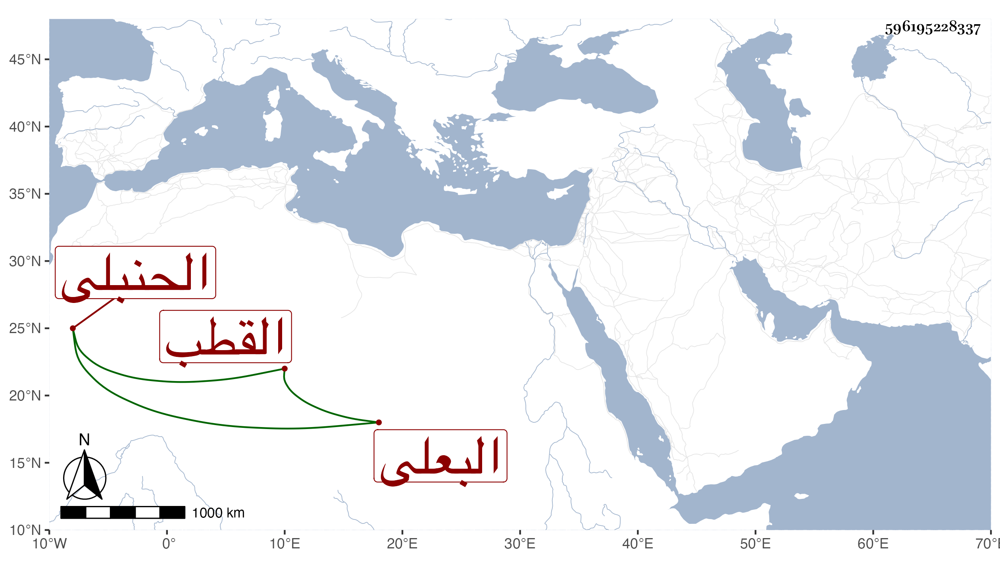

0902Sakhawi.DawLamic.ITO20230111-ara1.EIS1600.596195228337
Biography ID: 596195228337
766
موسى بن الحسين بن محمد بن على بن محمد بن أبي الرجال أحمد بن عبد الله بن عيسى بن أحمد بن على بن محمد بن محمد القطب الحسينى اليونينى البعلى الحنبلى . ولد في ربيع الأول سنة اثنتين وستين وسبعمائة واشتغل في الفقه والفرائض والنحو على الشمس بن اليونانية وفي الفرائض على أبيه وسمع صحيح مسلم على أحمد بن عبد الكريم البعلى والتوكل لابن أبى الدنيا على أحمد بن محمد بن راشد بن خطليشا والصحيح على محمد بن علي بن أحمد اليونيني ومحمد بن محمد بن إبراهيم الحسينى ومحمد بن أحمد الجردى وقرأ السيرة لابن إسحق على النجم بن الكشك , وحدث سمع منه الفضلاء . ومات قريب الأربعين .
